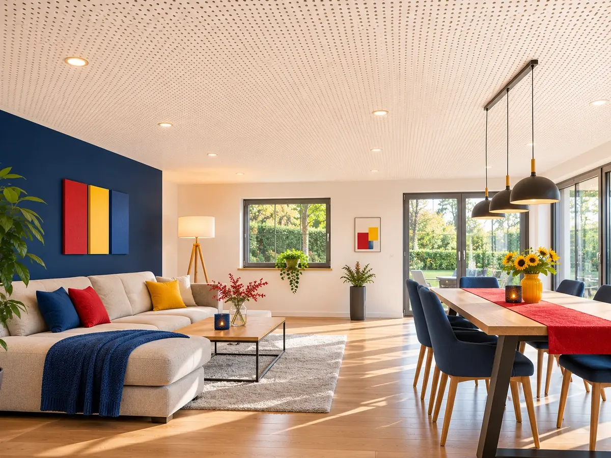
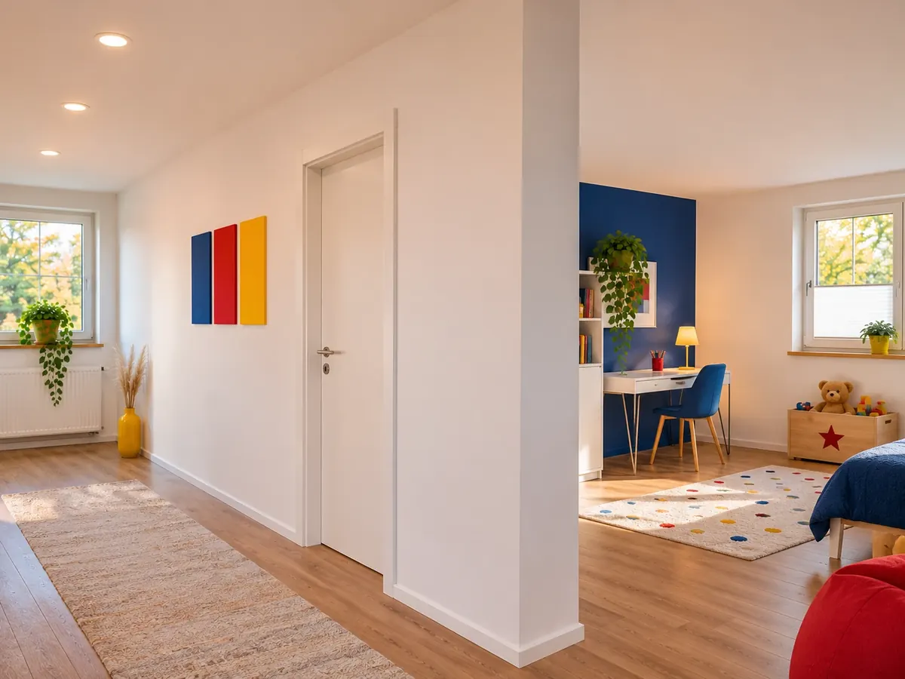
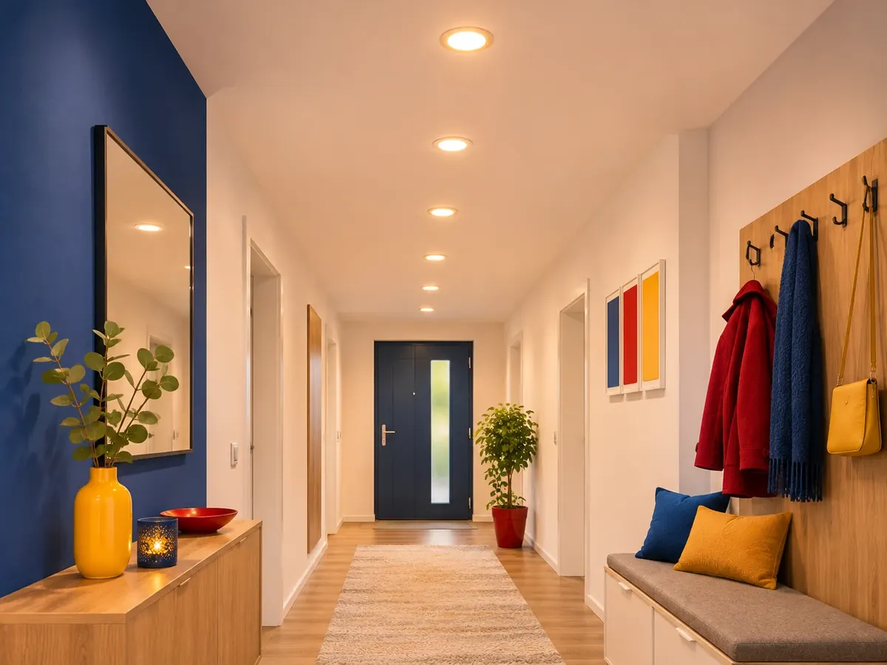

Dachausbau im Einfamilienhaus
Aus einem Dachboden, der nur zum Abstellen da war, ist ein Schlafzimmer mit Dachfenster geworden. Wir haben die Schrägen gedämmt, mit Gipskarton verkleidet und Spots in die Decke gesetzt.
- Dachausbau
- Dämmung
- Einbauspots
Ein paar Beispiele aus den letzten Monaten. Vom Dachboden bis zum Flur.
Aus einem Dachboden, der nur zum Abstellen da war, ist ein Schlafzimmer mit Dachfenster geworden. Wir haben die Schrägen gedämmt, mit Gipskarton verkleidet und Spots in die Decke gesetzt.

Im großen offenen Wohn- und Essbereich hallte jedes Gespräch. Eine gelochte Akustikdecke schluckt jetzt den Schall, und am Esstisch versteht man sich wieder.

Ein großes Zimmer, zwei Kinder. Wir haben eine gedämmte Ständerwand mit Tür eingezogen. Jetzt hat jedes Kind seinen eigenen Raum, und es ist nebenan ruhig.

Im Flur liefen Leitungen sichtbar unter der Decke entlang. Die neue abgehängte Decke versteckt sie, und eine Reihe Einbauspots macht den Flur hell und freundlich.
Erzählen Sie uns, was Sie vorhaben. Wir melden uns innerhalb von zwei Werktagen.